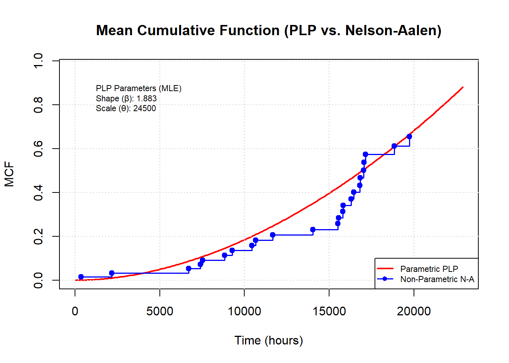
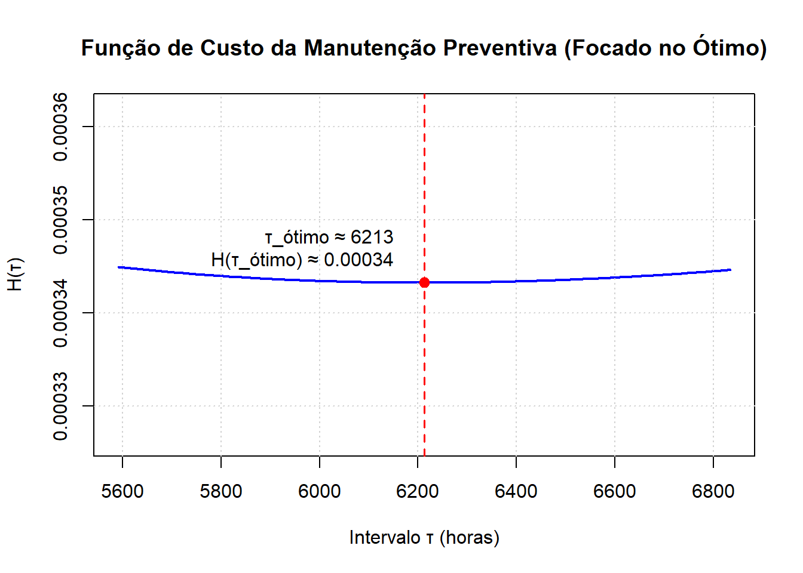

# --- 1. Criação do Dataframe (Dados Corrigidos - 61 observações) ---
Equi <- c(1, 1, 1, 2, 2, 2, 3, 3, 4, 5, 6, 7, 7, 8, 8, 9, 9, 10, 11, 12,
12, 12, 13, 14, 14, 14, 15, 16, 16, 17, 17, 18, 19, 20, 20, 20,
21, 22, 23, 23, 24, 24, 25, 26, 27, 27, 28, 28, 29, 30, 30, 31,
32, 33, 34, 35, 36, 37, 38, 39, 40)
Time_T_i <- c(8839, 17057, 21887, 9280, 16442, 21887, 10445, 13533, 7902,
8414, 13331, 17156, 21887, 16305, 21887, 16802, 21887, 4881,
16625, 7396, 7541, 19590, 2211, 15821, 19746, 19877, 1927,
15813, 21886, 15524, 21886, 21440, 369, 11664, 17031, 21857,
7544, 6039, 2168, 6698, 18840, 21879, 2288, 2499, 10668,
16838, 15550, 21887, 1616, 14041, 20004, 21888, 21888, 21888,
21888, 21888, 21888, 21888, 21888, 21888, 21888)
Event_at_T_i <- c(1, 1, 0, 1, 1, 0, 1, 0, 0, 0, 0, 1, 0, 1, 0, 1, 0, 0, 0, 1, 1,
0, 0, 1, 1, 0, 0, 1, 0, 1, 0, 0, 1, 1, 1, 0, 0, 0, 1, 1, 1,
0, 0, 0, 1, 1, 1, 0, 0, 1, 0, 0, 0, 0, 0, 0, 0, 0, 0, 0, 0)
df_plp_periods <- data.frame(Equi = Equi, T_obs = Time_T_i, Event_final = Event_at_T_i)Trabalho 2: Otimização de Manutenção para Sistemas Reparáveis
Introdução
Este projeto aborda a análise de confiabilidade e a otimização de políticas de manutenção para sistemas reparáveis, especificamente aplicando o modelo de Processo de Lei de Potência (PLP) para sistemas que sofrem Reparo Mínimo (MR) após falhas e Manutenção Preventiva (PM) perfeita em intervalos programados. A metodologia e os dados base são inspirados no artigo “Optimal Maintenance Time for Repairable Systems” de Gilardoni & Colosimo (2007) e nas planilhas fornecidas pelo professor, que utilizam dados de falha de transformadores de potência.
Parte a: Estimação dos Parâmetros do PLP
1. Preparação dos Dados
2. Função de Log-Verossimilhança
# Função de log-verossimilhança simplificada para o PLP
log_likelihood_PLP_simplified <- function(params, T_observations, final_event_status) {
beta <- params[1]
theta <- params[2]
if (beta <= 1e-9 || theta <= 1e-9) return(1e10)
log_lik_contributions <- numeric(length(T_observations))
for (i in seq_along(T_observations)) {
T_i <- T_observations[i]
event_i <- final_event_status[i]
log_rho_Ti_contrib <- 0
if (event_i == 1) {
log_rho_Ti_contrib <- if (T_i > 1e-9) {
log(beta) - beta * log(theta) + (beta - 1) * log(T_i)
} else {
-1e10
}
if (!is.finite(log_rho_Ti_contrib)) log_rho_Ti_contrib <- -1e10
}
M_Ti_contrib <- if (T_i > 1e-9) (T_i / theta)^beta else 0
if (!is.finite(M_Ti_contrib)) M_Ti_contrib <- 1e10
log_lik_contributions[i] <- log_rho_Ti_contrib - M_Ti_contrib
}
total_log_lik <- sum(log_lik_contributions)
if (!is.finite(total_log_lik)) return(1e10)
return(-total_log_lik)
}3. Estimação dos Parâmetros com optim
initial_params_plp <- c(beta = 1.99, theta = 24500)
mle_fit_plp_simp <- optim(
par = initial_params_plp,
fn = log_likelihood_PLP_simplified,
T_observations = df_plp_periods$T_obs,
final_event_status = df_plp_periods$Event_final,
method = "L-BFGS-B",
lower = c(0.1, 1000.0),
upper = c(5.0, 60000.0),
control = list(maxit = 1000, factr = 1e7)
)
beta_hat_plp_a <- mle_fit_plp_simp$par[1]
theta_hat_plp_a <- mle_fit_plp_simp$par[2]
max_log_lik_plp_a <- -mle_fit_plp_simp$value
aic_value_plp_a <- -2 * max_log_lik_plp_a + 2 * 2
beta_hat_plp_a; theta_hat_plp_a; aic_value_plp_a beta
1.883129 theta
24500 [1] 551.73544. Avaliação do Modelo e MCF
# Cálculo da MCF Não-Paramétrica (Nelson-Aalen)
observed_failure_times_agg <- sort(unique(df_plp_periods$T_obs[df_plp_periods$Event_final == 1]))
mcf_na_values_mod <- numeric(length(observed_failure_times_agg))
current_mcf_na_mod <- 0
if (length(observed_failure_times_agg) > 0) {
for (i in seq_along(observed_failure_times_agg)) {
t_k <- observed_failure_times_agg[i]
d_k <- sum(df_plp_periods$T_obs == t_k & df_plp_periods$Event_final == 1)
r_k <- sum(df_plp_periods$T_obs >= t_k)
if (r_k > 0) {
current_mcf_na_mod <- current_mcf_na_mod + (d_k / r_k)
} else if (d_k > 0) {
current_mcf_na_mod <- current_mcf_na_mod + d_k
}
mcf_na_values_mod[i] <- current_mcf_na_mod
}
}
df_mcf_na_plot <- data.frame(Time = observed_failure_times_agg, MCF_NA = mcf_na_values_mod)
# Plot da MCF Paramétrica vs Não-Paramétrica
max_time_plot <- max(df_plp_periods$T_obs, na.rm = TRUE)
tempos_plot_param <- seq(0, max_time_plot + 1000, length.out = 200)
mcf_linha_vermelha_plp <- (tempos_plot_param / theta_hat_plp_a)^beta_hat_plp_a
ylim_max_plot <- if (nrow(df_mcf_na_plot) > 0 && length(df_mcf_na_plot$MCF_NA) > 0) {
max(c(mcf_linha_vermelha_plp, df_mcf_na_plot$MCF_NA), na.rm = TRUE) * 1.1
} else {
max(mcf_linha_vermelha_plp, na.rm = TRUE) * 1.1
}
ylim_max_plot <- if (!is.finite(ylim_max_plot) || ylim_max_plot <= 0) max(mcf_linha_vermelha_plp, na.rm = TRUE) * 1.2 else ylim_max_plot
ylim_max_plot <- if (!is.finite(ylim_max_plot) || ylim_max_plot <= 0) 1.0 else ylim_max_plot
plot(tempos_plot_param, mcf_linha_vermelha_plp, type = "l", col = "red", lwd = 2,
xlab = "Time (hours)", ylab = "MCF", xlim = c(0, max_time_plot + 1000), ylim = c(0, ylim_max_plot), main = "Mean Cumulative Function (PLP vs. Nelson-Aalen)")
grid()
if (nrow(df_mcf_na_plot) > 0 && nrow(df_mcf_na_plot) == length(df_mcf_na_plot$MCF_NA)) {
lines(df_mcf_na_plot$Time, df_mcf_na_plot$MCF_NA, type = "s", col = "blue", lwd = 1.5)
points(df_mcf_na_plot$Time, df_mcf_na_plot$MCF_NA, col = "blue", pch = 19)
}
legend_text_plp <- paste("PLP Parameters (MLE)\nShape (β):", round(beta_hat_plp_a, 3), "\nScale (θ):", round(theta_hat_plp_a, 0))
legend("topleft", legend = legend_text_plp, bty = "n", cex = 0.7, inset = c(0.05, 0.05))
legend("bottomright", legend = c("Parametric PLP", "Non-Parametric N-A"), col = c("red", "blue"), lty = 1, pch = c(NA, 19), lwd = c(2, 1.5), cex = 0.7)
Parte b: Política Ótima de Manutenção
1. Cálculo de τₒₜᵢₘₒ
CPM <- 1 # Custo de PM
CMR <- 15 # Custo de MR
if (beta_hat_plp_a <= 1) {
tau_otimo <- NA
} else {
termo_custo <- CPM / ((beta_hat_plp_a - 1) * CMR)
tau_otimo <- theta_hat_plp_a * termo_custo^(1 / beta_hat_plp_a)
}
tau_otimo; tau_otimo / 24 theta
6212.808 theta
258.867 2. Visualização da Função de Custo
plot_custo_H_tau_focado <- function(beta, theta, cpm_val, cmr_val, tau_otimo_calc) {
range_offset <- tau_otimo_calc * 0.10
if (range_offset < 200) range_offset <- 200
tau_min_plot <- max(100, tau_otimo_calc - range_offset)
tau_max_plot <- tau_otimo_calc + range_offset
taus <- seq(tau_min_plot, tau_max_plot, length.out = 200)
H_tau_values <- numeric(length(taus))
for (i in seq_along(taus)) {
tau_i <- taus[i]
m_tau_i <- (tau_i / theta)^beta
H_tau_values[i] <- (1 / tau_i) * (cpm_val + cmr_val * m_tau_i)
}
valid_indices <- is.finite(H_tau_values)
min_H_val <- min(H_tau_values[valid_indices], na.rm = TRUE)
max_H_val <- max(H_tau_values[valid_indices], na.rm = TRUE)
y_range_padding <- (max_H_val - min_H_val) * 0.1
if (y_range_padding < 1e-6) y_range_padding <- min_H_val * 0.05
if (y_range_padding == 0 && min_H_val == 0) y_range_padding <- 1e-5
ylim_focado <- c(max(0, min_H_val - y_range_padding), max_H_val + y_range_padding)
if (ylim_focado[1] >= ylim_focado[2]) ylim_focado[1] <- ylim_focado[2] * 0.9
plot(taus[valid_indices], H_tau_values[valid_indices], type = "l", col = "blue", lwd = 2,
xlab = "Intervalo τ (horas)", ylab = "H(τ)", main = "Função de Custo da Manutenção Preventiva (Focado no Ótimo)", ylim = ylim_focado)
grid()
if (!is.na(tau_otimo_calc) && tau_otimo_calc > 0 && is.finite(tau_otimo_calc)) {
m_tau_opt <- (tau_otimo_calc / theta)^beta
H_tau_opt <- (1 / tau_otimo_calc) * (cpm_val + cmr_val * m_tau_opt)
abline(v = tau_otimo_calc, col = "red", lty = 2, lwd = 1.5)
points(tau_otimo_calc, H_tau_opt, col = "red", pch = 19, cex = 1.2)
text_label <- paste0("τ_ótimo ≈ ", round(tau_otimo_calc, 0), "\nH(τ_ótimo) ≈ ", round(H_tau_opt, 5))
text_x <- if (tau_otimo_calc < mean(range(taus[valid_indices]))) tau_otimo_calc + 0.05 * diff(range(taus[valid_indices])) else tau_otimo_calc - 0.05 * diff(range(taus[valid_indices]))
text_y <- H_tau_opt + 0.05 * diff(ylim_focado)
adj <- if (tau_otimo_calc < mean(range(taus[valid_indices]))) c(0, 0) else c(1, 0)
text(text_x, text_y, labels = text_label, adj = adj)
}
}
plot_custo_H_tau_focado(beta = beta_hat_plp_a, theta = theta_hat_plp_a, cpm_val = CPM, cmr_val = CMR, tau_otimo_calc = tau_otimo)
Conclusões
- Estimativa PLP (Letra a): β̂ = 1.883, θ̂ = 2.45^{4}, AIC = 551.735.
- Interpretação de β̂: Se β̂ > 1 indica taxa de falha crescente (desgaste).
- Política ótima de manutenção (Letra b): τₒₜᵢₘₒ ≈ 6212.8 horas (258.87 dias).